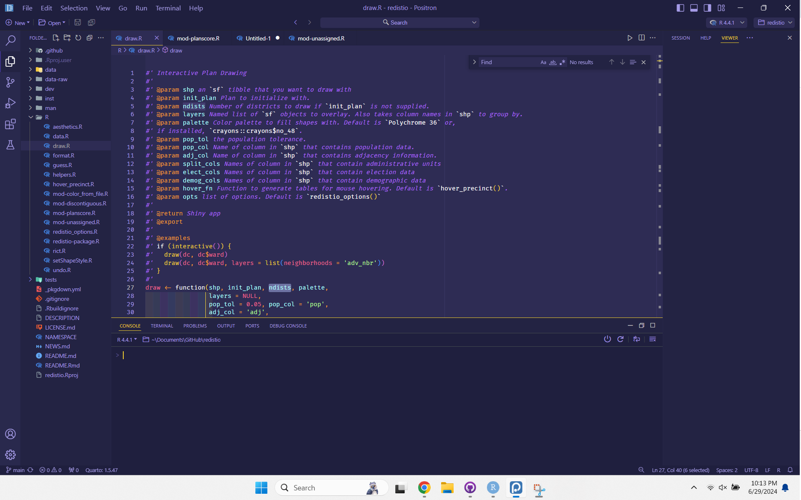
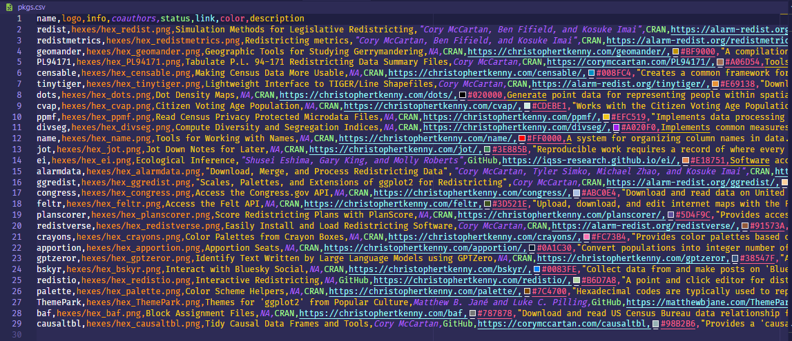

Settings, Keybindings, and Extensions for Positron
My initial keybindings, settings, and extensions for Positron, Posit’s new IDE built on “Code - OSS” (aka Visual Studio Code aka VS Code).
![]()
This post introduces my initial set of settings, keybindings, and extensions for Positron. Positron is Posit’s data science oriented IDE built on Code - OSS. The open beta just began this week (at the time of writing). Most of my life is spent in RStudio, but I’ve been trying to use Positron to get a sense of it.
Below, I list out the settings, keybinds, and some details on extensions that I like so far. I plan to update this over time or make a gist, but the simplest thing to start was just make a short blog post.
For clarity, the exploration to get here is not random. I use RStudio as main my IDE, so I started with their keybindings discussed here. I then ported over random settings from VS Code, which I was using for typst and markdown editing, following the untimely demise of Atom. The rest of the settings are things I’ve found when Googling random bits of information about VS Code and how to fix things I disliked.
Settings
These are the settings I have in settings.json for Positron.
{
// make default keybinds rstudio-like
"rstudio.keymap.enable": true,
// font settings
"editor.fontFamily": "Fira Code",
"editor.fontLigatures": true,
// color theme settings
"workbench.colorTheme": "Shades of Purple",
"workbench.colorCustomizations": {
"[Shades of Purple]": {
"tab.inactiveBackground": "#222244",
"tab.inactiveForeground": "#FFFFFF",
"tab.activeBackground": "#2D2B55",
"tab.activeForeground": "#A599E9",
"editorGroupHeader.tabsBackground": "#222244"
}
},
// ctrl+n opens a new file in R by default
"files.defaultLanguage": "r",
// add vertical line at 80 characters
"editor.rulers": [
80
],
// handle newline saving adapted from
// https://rfdonnelly.github.io/posts/sane-vscode-whitespace-settings/
"files.insertFinalNewline": true,
"editor.renderFinalNewline": "dimmed",
"files.trimFinalNewlines": true,
"files.trimTrailingWhitespace": true,
// also render trailing whitespace, since it'll get trimmed
"editor.renderWhitespace": "trailing",
// better pasting
"editor.formatOnPaste": true,
// prettier folders since vscode is ugly by default
"workbench.iconTheme": "material-icon-theme",
// adds lines for the current bracket you're in
"editor.guides.bracketPairs": "active",
// pretty cursor
"editor.cursorBlinking": "phase",
"editor.cursorStyle": "line",
// otherwise opening two files closes the first ???
"workbench.editor.enablePreview": false,
// adds more lines to the file tab
"workbench.tree.renderIndentGuides": "always",
// make the terminal use powershell by default
"terminal.integrated.defaultProfile.windows": "PowerShell",
// settings editor json with "ctrl+,"
"workbench.settings.editor": "json",
// Extension-specific settings
// otherwise functions often show errors if initial indent is not even
"indentRainbow.ignoreErrorLanguages": [
"r"
],
// error delay so errorLens is less noisy
"errorLens.delay": 750,
}Keybindings
These are relatively simple, as I prefer to run devtools::load_all() in the terminal than to do it on a keybinding. In general, I dislike too many keybindings when the alternative is a short bit of typing. The upstream default settings from OSS Code are already extremely greedy, so I suspect most of my keybindings over time will be focused on removing defaults.
The first keybinding is for inserting an R code chunk in a Quarto document. To interrupt a running R process, I use escape in the console. (The button is called escape for a reason after all.) The third keybinding is to fix line indention, since I obsessively click (ctrl+a then ctrl+i). The last keybinding just undoes a default keybinding because Positron opens random files if you already have the search open.
[
{
"key": "ctrl+shift+r",
"command": "editor.action.insertSnippet",
"when": "editorLangId == 'quarto'",
"args": {
"snippet": "```{r}\n$0\n```"
},
},
{
"key": "escape",
"command" : "workbench.action.languageRuntime.interrupt",
"when": "positronConsoleFocused"
},
{
"key": "ctrl+i",
"command": "editor.action.reindentlines"
},
{ // fixes the double ctrl+shift+p opening stuff issue
"key": "ctrl+shift+p",
"command": "-workbench.action.quickOpenNavigatePreviousInFilePicker",
"when": "inFilesPicker && inQuickOpen"
},
]Extensions
Last, but not least, are the extensions I installed. Extensions for Positron are installed from Open VSX. There are a bunch of extensions installed by default, which I’ve kept, excepted disabling python. It’s nice that Positron let’s you use a St.-Patrick-approved variant without the snakes. As for the rest of the extensions, below I list the most important part, the color theme, first and then list the rest in alphabetical order.
Shades of Purple

I like Shades of Purple as a starting place for the theme. It reminds me of Cobalt in RStudio, which is my go-to theme on Windows. I switch between mac and Windows frequently when working on packages, so I need very different themes to keep everything straight.
That said, the Shades of Purple has the tab colors inverted, where it highlights inactive tabs and not the active tab, but it’s easy to fix this with the settings from above (and repeated here). It probably doesn’t matter if you have many tabs open, but with just two it’s confusing.
"workbench.colorTheme": "Shades of Purple",
"workbench.colorCustomizations": {
"[Shades of Purple]": {
"tab.inactiveBackground": "#222244",
"tab.inactiveForeground": "#FFFFFF",
"tab.activeBackground": "#2D2B55",
"tab.activeForeground": "#A599E9",
"editorGroupHeader.tabsBackground": "#222244"
}
}Better Comments
This adds some highlighting to comments, including highlighting in roxygen.
Error Lens
This moves the error messages from the bottom of the screen to the line where the error is.
Indent Rainbow
This adds colors for every two spaces for indents.
Material Icon Theme
This adds nice icons to the folders and files in the file explorer, terminal, tabs, etc.
Quarto
I was surprised that this wasn’t already bundled with Positron. I suspect that will change, but for now, I’ve installed it. This extension adds full support for Quarto documents.
The first version of this post noted that Quarto seemed messy. I get a mess of files in the working directory when editing a Quarto typst template, but it seems very clean when rendering my website. So it may already be pretty good for general use! I expect the experience here will improve over time on the other less common uses.
Rainbow CSV
This part is really cool: when you open a csv it adds a bunch of color to distinguish columns. It even adds a box for when a column is hex color codes.
An example of the color coding from my packages csv that I use on my website is:

Typst Companion
We head now into the Typst extensions. These are all extensions I was using on VS Code and now can use in Positron. The companion adds some keyboard shortcuts for editing in Typst.
Typst LSP
This is a nice general purpose Typst extension. I have no real complaints, it seems to do the job well.
Typst Preview
This previewer adds a near immediate preview of the document. Typst’s big selling point to me is its speed with roughly 90% of LaTeX’s customizability. The previewer helps get you all of the speed locally, without using something like typst.app.
vscode-pdf
This gets you a nice PDF viewer, which is great for tasks like commenting on papers while reading it. This works great with a split screen.
YAML
I use YAML a bunch for Quarto configs, so this is helpful. It’s probably not necessary, but it’s nice to have.
Extensions that I tried but wasn’t convinced
Code Spell Checker
This looks really helpful, but was flagging hundreds of false positive words when doing package development. There may be better settings for it, but there was way too much noise to be useful by default.
Spell Right
Spell check is hard, but I couldn’t get this extension to work at all. Everything resulted in a modal dialogue for an error, unfortunately. Similar to the other spellchecker, this might just be designed for a different use case than I have.
Summary
- I like Positron quite a bit.
- Because it’s based on OSS Code, it comes with VS Code’s biggest issue: greedy keybindings.
- ~The Quarto extension is a bit messy, but I suspect that will improve over time.~
- Everything else seems nice and the ability to customize so much is pretty neat.
Citation
@online{t._kenny2024,
author = {T. Kenny, Christopher},
title = {Settings, {Keybindings,} and {Extensions} for {Positron}},
date = {2024-06-29},
url = {https://christophertkenny.com/posts/2024-06-29-positron-settings/},
langid = {en}
}